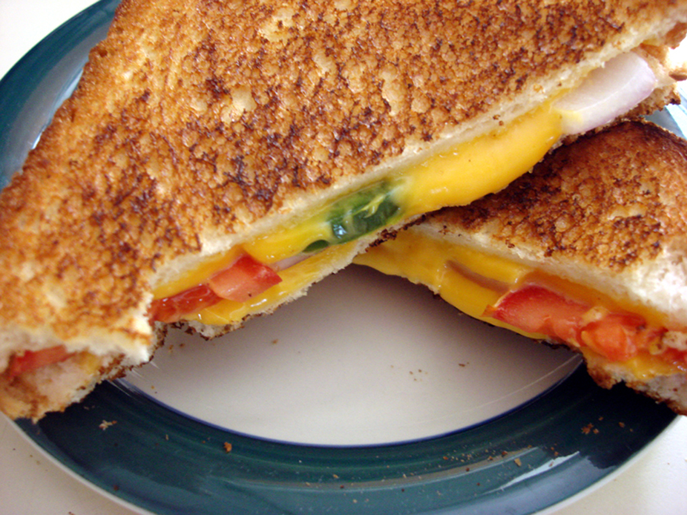

Home
Spicy Grill Cheese

Description: Grilled cheese with onions, tomatoes and jalapenos-- tastier than the original!
Ingredients
- 2 tablespoons butter or margarine
- 4 slices white bread
- 2 slices American cheese
- 1 roma (plum) tomato, thinly sliced
- ¼ small onion, chopped
- 1 jalapeno pepper, chopped
Instructions
- Heat a large skillet over low heat.
- Spread butter or margarine onto one side of two slices of bread.
- Place both pieces buttered side down in the skillet.
- Lay a slice of cheese on each one, and top with slices of tomato, onion and jalapeno.
- Butter one side of the remaining slices of bread, and place on top buttered side up.
- When the bottom of the sandwiches are toasted, flip and fry until brown on the other side.